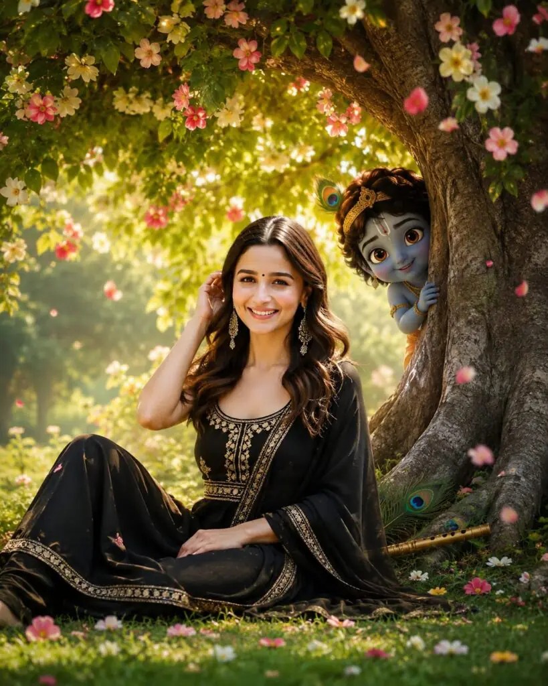

Home / Beautiful Little Krishan Hiding Behind the Tree Photos Prompt
Beautiful Little Krishan Hiding Behind the Tree Photos Prompt
By Prompt Library•4 July 2026
Looking for the perfect Little Krishan Hiding Behind the Tree Photos Prompt? You’re in the right place. This prompt helps you create beautiful AI images of Little Krishna playfully peeking from behind a lush green tree in a magical Vrindavan-inspired garden. The results are colorful, peaceful, and perfect for social media or creative projects.
Whether you use ChatGPT, Gemini, Grok, Midjourney, or any AI image generator, this prompt is designed to produce high-quality, realistic, and cinematic images. It includes detailed lighting, flowers, grass, peacock feathers, Krishna’s flute, and a divine atmosphere for stunning 4K artwork.
If you want eye-catching Krishna-themed AI images with a professional look, simply copy the prompt below and customize it as needed. No advanced editing skills are required.
For Boys
Want more awesome prompts?
Join our community and get the latest viral prompts daily.
Here's a much more cinematic, professional, AI image-generation prompt with a luxury 4K look. I've also corrected it so it matches the uploaded image (woman instead of "boy/young man") while preserving the identity.
---
Ultra-Realistic 8K Cinematic Prompt
STRICT IDENTITY LOCK: Preserve the SAME person's face with 101% identity accuracy. Do not change or beautify the face in any way. Keep the exact facial structure, eyes, eyebrows, nose, lips, jawline, smile, skin tone, hairstyle, hairline, expression, and body proportions identical to the reference image. Keep the same black embroidered outfit exactly as in the original image.
Scene: Create an ultra-realistic cinematic fantasy portrait in a divine Vrindavan-inspired garden. A majestic ancient banyan tree with lush emerald-green leaves stands behind her. The branches are filled with thousands of blooming pink, white, and golden flowers, while delicate flower petals gently fall through the air. She is seated gracefully beneath the tree in an elegant, natural pose on vibrant green grass covered with scattered blossoms.
Place Lord Krishna's golden flute and a pair of radiant peacock feathers beside the tree roots, glowing softly with divine light.
Behind the tree, add an adorable Little Krishna (3D Jubilee-style) peeking playfully from behind the trunk, smiling warmly as if watching her. Little Krishna should appear magical, realistic, and beautifully integrated into the environment with subtle golden rim lighting.
The environment features dreamy god rays passing through the leaves, cinematic volumetric lighting, floating dust particles, soft mist, sparkling bokeh, butterflies, fireflies, and an ethereal golden-hour atmosphere. Add depth with realistic foreground flowers and blurred floral elements for a premium DSLR look.
Camera & Composition:
Ultra-wide cinematic composition
Dynamic low-angle + slight upper-angle perspective
35mm full-frame lens
f/1.8 aperture
Shallow depth of field
Natural perspective
Perfect facial focus
HDR photography
Soft cinematic bloom
Ultra-detailed skin texture
Realistic fabric folds
Hyper-realistic lighting
Premium color grading
Hollywood fantasy aesthetic
Quality: Masterpiece, Best Quality, Ultra HD, 8K, Photorealistic, Hyper Realistic, Unreal Engine 5, Octane Render, Ray Tracing, Global Illumination, Volumetric Lighting, HDR, Cinematic Color Grading, Sharp Details, Instagram Viral Aesthetic, Luxury Fantasy Portrait, Award-Winning Photography, DSLR Quality, Maximum Detail.
Aspect Ratio: 4:5 (Instagram Portrait).

? AI PROMPT
Turn this prompt into a profession. Same face Same outfit 101% face don’t change: ultrawide. Upper-angle low-angle shot young man. Change this background: Add a green tree behind the boy And Add realistic flowers to the tree and drop them down as well. seat this boy under the tree in a stylish pose And add grass all around this boy; it needs to look realistic. And add Krishna’s flute and peacock feather under the tree. And add 4k ‘Little Krishna 3D’ behind the boy, in the ‘Jubilee’ style. Little Krishna is watching me from behind the tree. Add a pose like that. Increase quality: Instagrammable 4:5 ratio.
We hope this Little Krishan Hiding Behind the Tree Photos Prompt helps you create amazing and realistic AI-generated images with ease. Feel free to adjust the background, lighting, pose, or colors to match your creative vision while keeping the magical Krishna theme.
you enjoy creating AI image prompts, bookmark this page and explore more trending prompts for Krishna, Radha, cinematic portraits, fantasy scenes, and viral social media edits. Keep experimenting and bring your imagination to life with AI.
Thank you for visiting our collection of AI image prompts. We regularly share the latest trending prompts for Krishna, cinematic portraits, fantasy scenes, anime art, and realistic photo editing. Check back often for fresh AI prompts that help you create unique, high-quality images in just a few clicks.